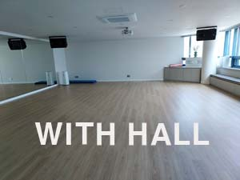
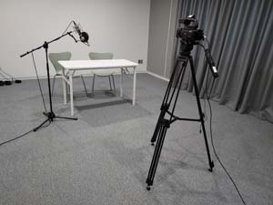

|
치유의 뜰 | |
| Healing & Studio | |
| 치유실 | |
|  | |
| 다양한 치유 활동을 통하여 전도 운동이 실현되는 플랫폼 | |
| 치유실 이용을 신청하세요 | |
| 1. | 불신자 다락방 사역자와 대상자, 새가족 다락방 사역 중인 사역자와 대상자 |
| 2. | 운동을 통해서 영육간 균형과 리듬을 회복하고 싶은 분 |
| 3. | 치유사역 시스템 구축에 관심있는 분 |
| 방역 방침에 따라 대기하실 수도 있습니다. | |
| 문의 : 이승오 집사(010-8858-0920) | |
| 스튜디오 | |
|  | |
| 미디어라는 도구를 통해 콘텐츠가 생산되어지고, 제자를 양성하는 대경 미디어 RUTC | |
|
| |